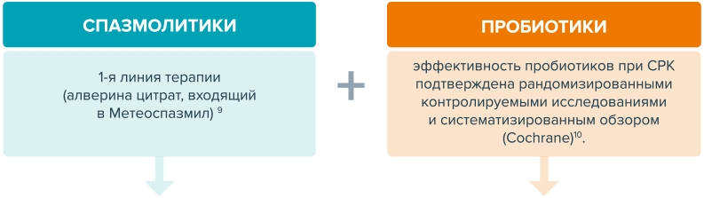

Вздутия
Вздутия

Элегантный выбор
для чувствительного кишечника
Боль и вздутие в животе
Газы в кишечнике (метеоризм) представляют собой чрезвычайно распространенное явление, которое случается, когда в желудочно-кишечном тракте происходит повышенное скопление газов. Возникает это состояние из-за переедания или употребления продуктов с повышенным содержанием клетчатки. В нормальном состоянии у людей каждые сутки через прямую кишку выходит приблизительно 600 мл газов. Об избыточном газообразовании говорят, если это количество значительно превышает норму, а выделение газов сопровождается болью или дискомфортом.
Симптомами газов в кишечнике является вздутие живота.
Характерны приступы боли. Сама боль при этом имеет cхваткообразный характер. В редких случаях повышенное газообразование в кишечнике сопровождается тошнотой, рвотой. Более распространенными симптомами являются запоры, поносы или отрыжка.
Кишечная микробиота может воздействовать на головной мозг
Факторы риска развития постинфекционного СРК
Относительный риск (баллы)
Психологические проблемы
40%
пациентов с синдромом раздраженного кишечника (СРК) имеют симптомы генерализованного тревожного расстройства (ГТР)
50 - 88%
пациентов с генерализованным тревожным расстройством отмечают налицие симптомов синдрома раздраженного кишечника
Традиционно назначают: спазмолитики, антидепрессанты ТЦА, бензодиазепины
СИМПТОМЫ СРК
Определение согласно Римским критериям IV
- Рецидивирующая абдоминальная боль в среднем как минимум 1 раз в неделю за последние 3 месяца, ассоциированная с 2 и более следующими симптомами:
- Критерии валидны при условии их наличия в течение последних 3 месяцев с началом симптомов не менее 6 месяцев назад
- Дефекацией
- Изменением частоты стула
- Изменением формы стула
Виды СРК
- СРК с преобладанием запоров
- Более четверти (1/4) испражнений с типами стула 1 и 2 по Бристольской шкале формы кала (БШФК) и менее одной четверти (1/4) испражнений с типами стула 6 и 7 по БШФК
- Альтернатива для эпидемиологии или клинической практики: пациент отмечает, что нарушения стула обычно проявляются запорами (тип стула 1 или 2 по БШФК)
- Типы согласно Римским критериям IV
- СРК с преобладанием диареи
- Более четверти (1/4%) испражнений с типами стула 6 и 7 по БШФК и менее одной четверти (1/4%) испражнений с типами стула 1 и 2 по БШФК
- Альтернатива для эпидемиологии или клинической практики: пациент отмечает, что нарушения стула обычно проявляются диареей (тип стула 6 или 7 по БШФК)
Диагностика
Специалист ставит диагноз СРК путем исключения всех возможных органических заболеваний.
- Анамнез
- Осмотр пациента
 Лабораторные исследования
Лабораторные исследования
- Колоноскопия
 Другие исследования
Другие исследования
- Диагноз
Подходы к лечению
новое предложение терапии синдрома раздраженного кишечника:
Комбинированная терапия СРК

показания
- Функциональные расстройства желудочно-кишечного тракта, проявляющиеся болями в животе, повышенным газообразованием, отрыжкой, тошнотой, запорами, поносами или их чередованием.
- Подготовка к рентгенологическому, ультразвуковому или инструментальному исследованию органов брюшной полости.
схема приема
По 1 капсуле до еды 2-3 раза в день
При подготовке к исследованиям брюшной полости — по 1 капсуле 2-3 раза накануне исследования и 1 капсуле утром в день ис
Механизм действия
часто задаваемые вопросы
- Вступает ли Метеоспазмил в лекарственное взаимодействие с другими препаратами?Не известно
- Может ли Метеоспазмил вызывать учащенное сердцебиение, проблемы со зрением и сухость во рту? Поскольку алверина цитрат не обладает атропиноподобным действием, он не оказывает системного действия на организм, влияя избирательно только на мускулатуру кишечника
- Для чего нужен симетикон в составе Метеоспазмила?Симетикон в высокой дозе быстро устраняет вздутие живота, которое часто сопровождает боли, а также препятствует давлению на чувствительные рецепторы слизистой оболочки кишечника
В чем преимущества Метеоспазмила?
Распространенность СРК
- Чаще возникает в возрасте от 15 до 65 лет2
- 1Canavan, C., et al. Clin Epidemiol, 2014. 6: стр. 71-80. 2 World Gastroenterology Organisation, Irritable Bowel Syndrome: a Global Perspective : с поправками от Сентября 2015. 2015 3 Ford, A.C. and N.J. Talley BMJ, 2012. 345: стр. e5836.
Значимое снижение качества жизни пациента с СРК
- 44% пациентов отмечают значительное снижение КЖ1
- Сравнимо с КЖ при сахарном диабете, финальной стадии ХПН или гриппе2
- СРК снижает ежедневную активность, трудоспособность и жизненный тонус3,4
- СРК снижает активность 73 дня в году (20% дней)
- >50% пациентов вынуждены находится вблизи туалетных комнат, опасаясь внезапной потребности воспользоваться ей
- 69% имеют повышенный уровень стресса в связи с симптомами
- 57% пациентов не способны контролировать и планировать свою жизнь
- Снижение качества жизни имеет прямую зависимость от степени болевого синдрома5
1. Dapoigny M et al. Gastroent clin et biol. 2009;33 (Suppl. 1):S3-S8; 2. Ballou, SWorld J Gastroint Patho 2015 November 15; 6(4):120-123. 3. Yoon, S.L., et al. Altern Med Rev, 2011. 16(2): 134-51. 4. Lesley A. . Gastroenterology 2016;150:1332-1343. 5. Hellström PM et al. Am J Gastroenterol 2011; 106:1299–1307.
«ВГЧ в настоящее время рассматривается в качестве первичного патофизичеологического механизма, который обуславливавает возникновение и интенсивность абдоминальной боли и моторных нарушений кишечника при СРК»1
Висцеральная гиперчувствительность является предиктором снижение качества жизни при СРК2
1. Jerndal P. et al Gastrointestinal-specific anxiety: an important factor for severity for GI symptoms and QoL in IBS. Neurogastroenterol. Motil. 2010 Jun 22 (6) 646-179 2. Ардатская М.Д. «Абдоминальная боль и ВГЧ у пациентов с СРК. IV Римские критерии клиническая практика» 2017 с.37
3. Bueno L. Influence of simethicone and alverine on stress-indused alterations of colonic permeability and sensitivity in rats: beneficial effects on their association. Journal of Pharmacy and Pharmacology, 2013, 65: 567-73 4. Coffin B. Les troubles fonctionnels intestinaux, actualite pratique. 2nd ed Rand ED, Reull-Malmaison (France) 2008 5. Vicente Larenzo-Zuniga, Elba Hop, Cristina Suarez «1.31, a new combination of probiotics, improves irritable bowel syndrome-related quality of life» World J Gastroenterol 2014 July 14; 20(26): 8709-871 6 ISSN 1007-9327
Механизм действия Метеоспазмила
Согласно международным данным, до 90% пациентов с СРК имеют висцеральную гиперчувствительность
Синергичное действие компонентов МЕТЕОСПАЗМИЛА на cтенку кишечника позволяет его применять у пациентов с СРК и СРК-подобными расстройствами
G. Barbara «Mechanisms Underlying Visceral Hypersensitivity in Irritable Bowel Syndrome» Curr Gastroenterol Rep (2011) 13: 308-315Клинические исследования
- Скачать статью
Клиническая эффективность Метеоспазмила в комплексной терапии болевого абдоминального и диспептического синдромов у пациентов с хроническим панкреотитом.
Исследование Wittmann
Эффективность комбинации Алверина цитрата / Симетикона на боль в животе / дискомфорт: Европейское, рандомизированное, двойное слепое, плацебо-контролируемое исследование в параллельных группах, страдающих СРК
T.Wittmann*1, L. Paradowski2, P. Ducrotté3, L. Bueno4, M. Andro-Delestrain5, J. Grouin6
2. Отделение гастроэнтерологии и гепатологии, Университет Вроклав, Вроклав, Польша
3. Гастронтерология, Университетская клиника, Руен, Франция
4. Нейрогастроэнтерология, INRA, Тулуза, Франция
5. Mедицинские вопросы, Майоли-Спиндлер, Шато, Франция
6. INSERM U657, Руенский университет, Руен, Франция
Wittmann et al. Aliment Pharmacol Ther, 2010. 31(6): 615-24.
- Многоцентровое, рандомизированное, двойное-слепое, плацебо-контролируемое исследование на параллельных группах
- Участвовали 17 центров гастроэнтерологии в Венгрии и Польши
- С июля 2007 по июль 2008
- Централизованная рандомизация проведена странами-участниками с использованием интерактивной системы распознавания голоса
Первичные критерии:
Уменьшение боли в животе/дискомфорта на 4-й неделе
Первичные критерии:
процент ответивших на лечение на 4-й неделе
-
Первое клиническое исследование спазмолитиков:
Использовались Римские критерии III
-
В соответствии с рекомендациями EMA и группы экспертов
Значительное уменьшение боли в животе/дискомфорта при приеме комбинации Алверина и Симетикона:
-
Независимо от подтипа СРК
Комбинация Алверина и Симетикона:1ая линия или 2ая линия препаратов выбора для лечения СРК
Исследование Wittmann
- Многоцентровое, рандомизированное, двойное слепое, плацебо-контролируемое исследование
- Сравнение 2 подходов в лечении:
- — Метеоспазмил (Алверин+Симетикон) 3 капс/день
- — Тримебутин 100мг 3 таб/день
- Длительность терапии: 8 недель
- Оценка на 0й, 28й, 56й и 84й дни
126 человек, страдающих СРК (колоноскопия в последние с18 месяцев); средний возраст — 46 лет
- Уровень боли в соответствии с аналоговой шкалой (частота, продолжительность, интенсивность, итог по трем пунктам)
- Частота и консистенция стула
- Качество жизни по 5-балльной системе